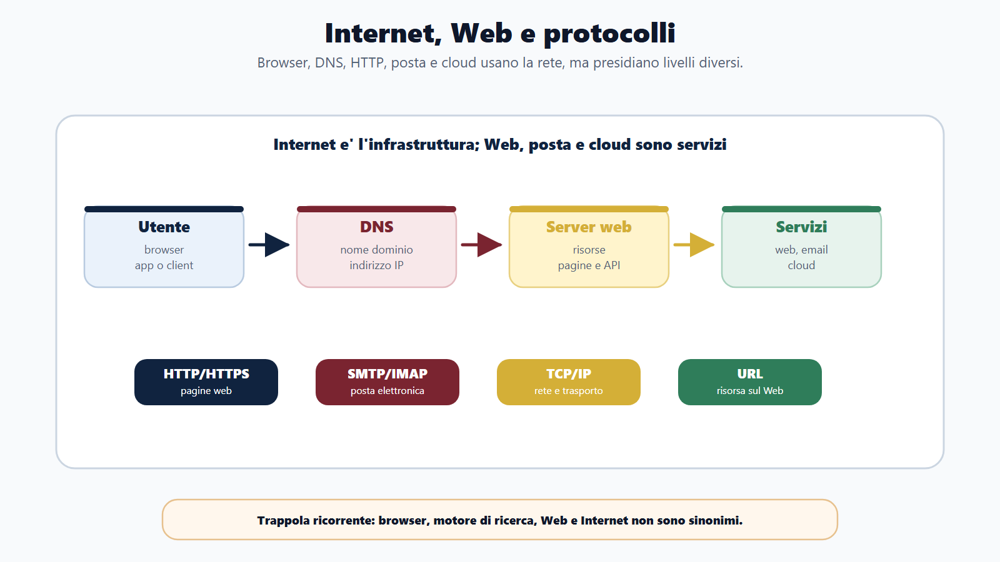
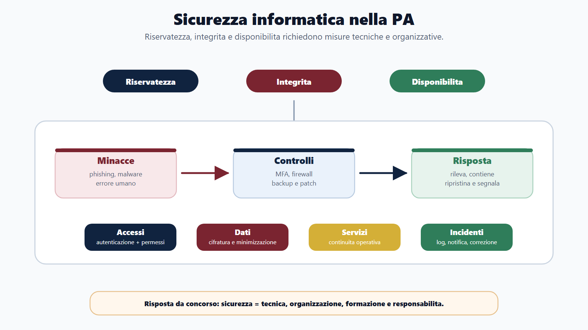
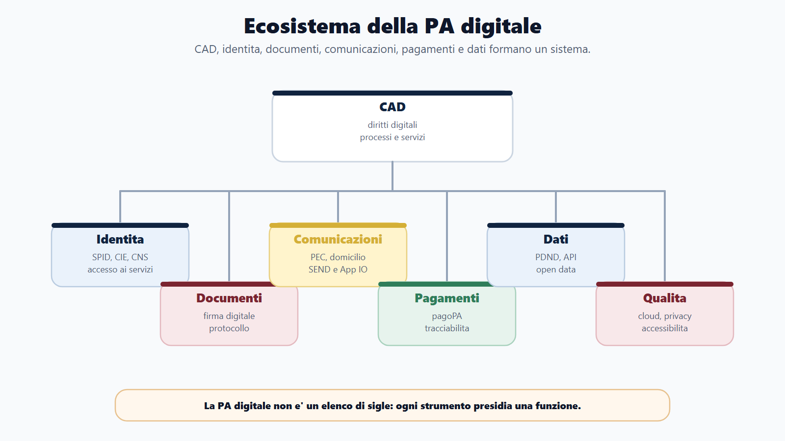
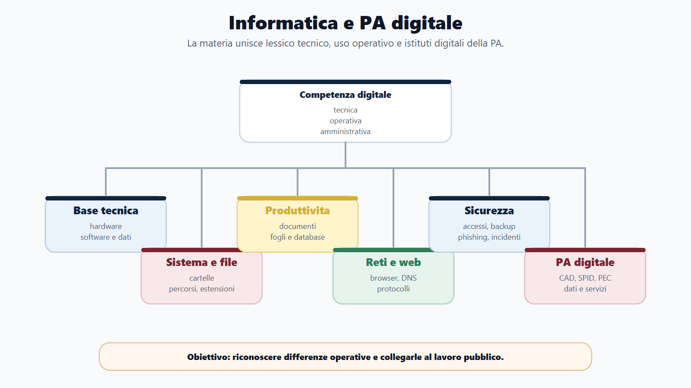
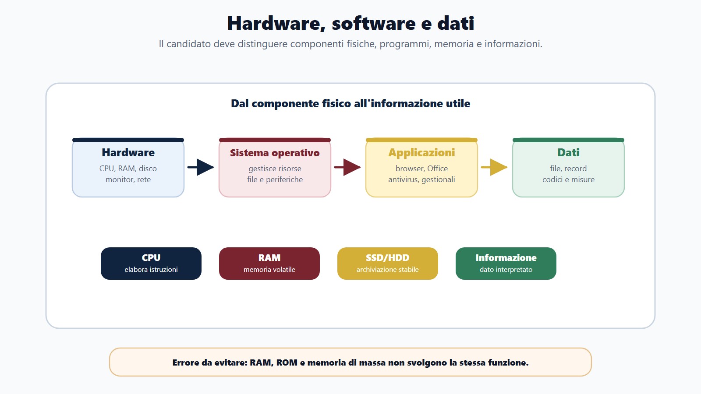
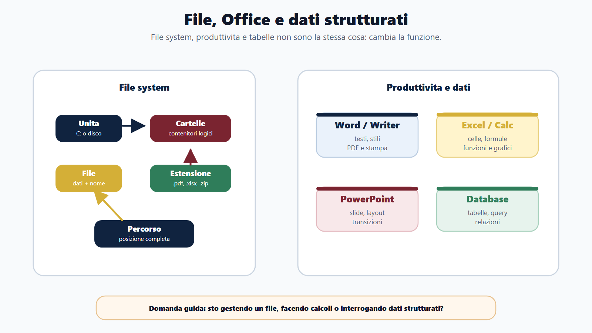

VOL-01 · Capitolo 10
Parte II · Materie comuni
Informatica, PA digitale
e competenze digitali
Nei concorsi «informatica» non indica solo computer e programmi. Comprende produttività, sistemi operativi, reti, sicurezza, basi di dati e servizi digitali della PA. L’obiettivo non è diventare tecnico: è riconoscere concetti, errori e responsabilità nel lavoro pubblico.
Schema
Internet reti protocolli

Schema
Sicurezza informatica pa

Schema
Ecosistema pa digitale

Schema
Mappa informatica pa digitale

Schema
Hardware software dati

Schema
File office dati

01 · Due errori opposti
Non solo normativa, non solo quiz «facili»
Il primo errore è studiare solo la parte normativa, trascurando videoscrittura, fogli elettronici, file, posta e reti. Il secondo è trattare l’informatica come nozioni isolate. La tecnologia è collegata all’azione amministrativa: protocollo, comunicazioni, conservazione, identità digitale, protezione dei dati, accessibilità e riuso.
Lessico tecnico
Hardware, software, file, memoria, reti, protocolli.
Strumenti
Office, browser, posta, database, sicurezza di base.
PA digitale
CAD, PEC, firme, SPID/CIE/CNS, protocollo, servizi, open data.
Trattare la PA digitale come «diritto amministrativo tecnologico» e l’informatica come quiz da fare alla fine. Le domande semplici sono spesso trappole di definizione; le domande digitali richiedono di capire come gli strumenti incidono sui procedimenti.
02 · BANDO
Come usare questo capitolo sul bando
| Che cosa fare | Risultato | |
|---|---|---|
| B — Bando | Individua se la traccia parla di informatica, competenze digitali, CAD, transizione digitale, privacy o sicurezza. | Capisci se la prova chiederà uso operativo, normativa digitale o entrambe. |
| A — Aree | Dividi: Office, sistemi operativi, Web, reti, sicurezza, database, PA digitale. | Riduci la confusione terminologica. |
| N — Nuclei | Per ogni area 10-15 definizioni ad alto rendimento e coppie: RAM/ROM, Internet/Web, PEC/email, firma/scansione, file/cartella. | Riconosci le trappole. |
| D — Diario | Segna le coppie che confondi e le sigle (SPID, CIE, CNS, PEC, CAD). | Correggi gli errori ripetuti. |
| O — Output | Trasforma ogni argomento in risposta breve da concorso. | Quiz, orale e scritto sintetico. |
03 · Priorità
Le domande dirette insistono su produttività e lessico; la PA digitale pesa anche fuori dalla materia
CAD, PEC, SPID, privacy, open data, cloud e accessibilità entrano anche in amministrativo, trasparenza, organizzazione e servizi al cittadino. Il capitolo 10 spiega come funzionano gli strumenti; il capitolo 7 applica il test giuridico su accesso, pubblicazione e dati personali. NIS2 e GDPR: la sicurezza informatica protegge sistemi; la protezione dei dati impone anche finalità, base giuridica e minimizzazione.
| Priorità | Argomenti | Perché |
|---|---|---|
| Molto alta | Word, Excel, file, cartelle, Windows, browser, email | Domande più frequenti e immediate. |
| Alta | Hardware, memoria, reti TCP/IP, LAN/WAN, client-server | Lessico tecnico di base. |
| Media-alta | Sicurezza, password, malware, backup, firewall | Collegano competenza e responsabilità. |
| Strategica PA | CAD, PEC, firma, SPID, CIE, CNS, protocollo, privacy, open data | Possono comparire anche fuori dall’informatica. |
04 · Hardware e memoria
Dati, elaborazione, strumenti
Il dato è una rappresentazione elementare; l’informazione nasce quando il dato è interpretato in un contesto. Hardware: componente fisica. Software: programmi e istruzioni (di sistema, applicativo, di utilità). Il bit è l’unità minima (0 o 1); il byte è composto da 8 bit. Capacità di disco in byte; velocità di rete spesso in bit per secondo.
| Elemento | Funzione | Trappola |
|---|---|---|
| CPU | Elabora istruzioni: il processore. | Non è memoria di archiviazione. |
| RAM | Memoria volatile di lavoro: si perde senza alimentazione. | Non conserva stabilmente i dati. |
| ROM | Memoria non volatile con istruzioni di base. | Non va confusa con la RAM. |
| SSD/HDD | Archiviazione permanente. | Non aumenta di per sé la velocità della CPU. |
| Periferiche | Input (tastiera, mouse, scanner); output (monitor, stampante); I/O (touchscreen, scheda di rete, USB). | Il driver è software, non una periferica. |
04 · File e sistema operativo
Cambiare l’estensione non cambia il contenuto
Il sistema operativo gestisce risorse, processi, memoria, file, periferiche, utenti e rete (Windows, Linux, macOS, Android, iOS). Interfaccia grafica e riga di comando possono convivere: la domanda di solito verifica il concetto, non l’eccezione tecnica. Copiare lascia l’originale; spostare lo trasferisce.
| Termine | Significato | Errore |
|---|---|---|
| File | Unità logica di dati, con nome e di solito estensione. | Non è una cartella. |
| Cartella/directory | Contenitore di file e altre cartelle. | Non contiene per forza un solo tipo di file. |
| Percorso/path | Posizione nel file system. | Non è il contenuto del file. |
| Estensione | Suggerisce il formato (.docx, .xlsx, .pdf, .zip, .html). | Rinominare .txt in .pdf non crea un vero PDF. |
| Collegamento | Riferimento a un file o programma. | Eliminarlo non sempre elimina l’originale. |
05 · Office
Formattare un testo non è salvarlo con nome
Microsoft Office, LibreOffice e suite cloud cambiano i menu; i concetti restano. Formattare: carattere, stile, allineamento, margini. Salvare con nome: copia con nome, posizione o formato diverso. Transizione: passaggio tra slide; animazione: movimento di oggetti dentro una slide.
| Area | Nuclei da concorso |
|---|---|
| Videoscrittura | Stili, intestazione e piè di pagina, elenchi, tabelle, controllo ortografico, stampa unione, esportazione in PDF. |
| Foglio elettronico | Cella, riga, colonna, formula che inizia con =, funzioni (somma, media), riferimento relativo (A1) e assoluto ($A$1), filtro, grafico. Non è un database relazionale. |
| Database d’ufficio | Tabelle, query, maschere, report, relazioni. Access/Base per piccoli archivi; DBMS più strutturati (es. Oracle) nei profili tecnici. |
06 · Internet, Web, posta
Internet non è il Web; il browser non è un motore di ricerca
Internet è una rete di reti. Il World Wide Web è uno dei servizi che ci girano sopra, tramite browser, URL, HTTP/HTTPS. Posta, file, videochiamate e cloud usano Internet senza coincidere con il Web. HTTPS è HTTP protetto; il DNS traduce nomi di dominio in indirizzi IP. Cc visibile; Ccn nascosta.
| Strumento | Funzione |
|---|---|
| Browser | Visualizza pagine, schede, download, cookie, certificati. Chrome, Edge, Firefox, Safari: programmi, non motori di ricerca. |
| URL | Protocollo, dominio, percorso. https indica il protocollo sicuro, non il nome del sito. |
| SMTP / POP3 / IMAP | Invio; scaricamento sul client; gestione sincronizzata sul server. |
| PEC | Trasmissione con evidenze opponibili su invio e consegna. Non è «email più sicura» in senso generico: è strumento giuridico-organizzativo, collegato a domicilio digitale, ricevute, protocollo. |
07 · Sicurezza e database
Autenticazione non è autorizzazione
Autenticazione: chi sei. Autorizzazione: che cosa puoi fare. Password robuste, aggiornamenti, backup, antivirus, firewall, crittografia e continuità operativa sono misure organizzative, non gadget. Malware è famiglia: virus, worm, trojan, ransomware. Il foglio elettronico calcola; il database gestisce dati strutturati, relazioni, integrità e accessi.
Reti in una riga
LAN locale, WAN ampia, Internet pubblica, intranet interna. Client chiede, server fornisce. Router instrada tra reti; switch dentro la LAN; modem modula verso il canale. TCP/IP è la suite di protocolli di Internet; l’indirizzo IP identifica l’interfaccia in rete.
Database e SQL
Tabella, record (riga), campo (colonna), chiave primaria, relazioni. Query per interrogare. SQL elementare: SELECT, FROM, WHERE. HTML struttura pagine; XML struttura dati. Programmazione: algoritmo, variabile, funzione: basta l’idea di sequenza di istruzioni, non un linguaggio completo.
08 · Documento informatico e firme
Una scansione della firma autografa non è firma digitale
Il CAD (D.Lgs. 82/2005) disciplina documento informatico, identità, comunicazioni, protocollo e conservazione. Il protocollo non è un timbro digitale: traccia numero, data, mittente o destinatario, oggetto, classificazione, fascicolo. Archiviare in una cartella non è conservare: la conservazione assicura autenticità, integrità, leggibilità e reperibilità nel tempo, con processo regolato.
| Strumento | Idea chiave |
|---|---|
| Firma elettronica | Insieme ampio di dati in forma elettronica usati per firmare. |
| Firma elettronica avanzata | Requisiti ulteriori di connessione al firmatario e di controllo. |
| Firma elettronica qualificata | Avanzata basata su certificato e dispositivo qualificati. |
| Firma digitale | Particolare firma qualificata a chiave pubblica, secondo la disciplina italiana: autenticità, integrità, non ripudio. Non garantisce da sola che il contenuto sia «vero» in senso materiale. |
| Marca temporale | Data e ora opponibili: prova l’esistenza del documento in un momento. |
09 · Identità e comunicazioni
SPID non è una PEC e non è una firma digitale
SPID autentica per accedere ai servizi. La PEC trasmette con valore. La firma digitale sottoscrive il documento. Il domicilio digitale è l’indirizzo elettronico eletto per comunicazioni aventi valore. Più è delicato il servizio, più deve essere robusta l’identificazione.
| Strumento | Che cos’è |
|---|---|
| SPID | Sistema Pubblico di Identità Digitale: credenziali di gestori accreditati. |
| CIE | Carta d’identità elettronica: documento fisico e digitale, anche per l’accesso. |
| CNS | Carta Nazionale dei Servizi: accesso in rete, spesso con certificati. |
| IPA / INI-PEC / INAD | Indici per reperire indirizzi digitali di PA, imprese e professionisti, persone fisiche e altri enti previsti. |
10 · Servizi della PA digitale
Collega il caso allo strumento
Una domanda può descrivere un cittadino che paga, riceve una comunicazione, scarica un certificato o accede a un servizio. Il Piano triennale per l’informatica nella PA orienta interoperabilità, servizi centrati sull’utente e gestione documentale: si fissa la direzione, non scadenze mutevoli.
| Servizio | Funzione |
|---|---|
| ANPR | Anagrafe nazionale della popolazione residente: dati anagrafici unitari, meno duplicazioni. |
| pagoPA | Pagamenti verso PA e soggetti aderenti, standardizzati e tracciabili. |
| FatturaPA / SDI | Formato della fattura elettronica e Sistema di Interscambio per transito e controlli formali. |
| App IO / SEND | Accesso a servizi e comunicazioni; notifiche digitali a valore legale. |
| PDND, open data, API | Interoperabilità: scambiare dati già in possesso della PA. Open data: riuso nei limiti, non semplice pubblicazione. Il test giuridico su accesso e dati resta il capitolo sulla privacy. |
11 · Verifica
Due domande da saper spiegare
Che differenza c’è tra PEC, SPID e firma digitale?
La PEC è un canale di trasmissione certificata, con ricevute di accettazione e consegna, collegato al domicilio digitale. SPID è uno strumento di identità digitale per autenticarsi e accedere ai servizi online. La firma digitale è una firma elettronica qualificata a chiave pubblica: collega il firmatario al documento e ne attesta l’integrità. Tre funzioni diverse: trasmettere, identificarsi, sottoscrivere.
Internet e Web sono la stessa cosa? Il browser è un motore di ricerca?
No e no. Internet è la rete; il Web è uno dei servizi. Il browser è il programma con cui navighi; il motore di ricerca è un servizio che indicizza e cerca informazioni. Stessa famiglia: RAM e ROM, byte e bit, copiare e spostare, archiviazione e conservazione, foglio elettronico e database.
12 · Mini-esercizio
Collega il fatto allo strumento
| Situazione | Strumento o distinzione |
|---|---|
| Il cittadino deve pagare una sanzione online. | pagoPA, con identità digitale per accedere al servizio. |
| L’ente deve inviare una comunicazione avente valore. | PEC o domicilio digitale; non una email ordinaria. |
| Un file .docx viene rinominato .pdf. | L’estensione non trasforma il formato interno. |
| Si inserisce l’immagine della firma in un PDF. | Non equivale a firma digitale. |
| Si salva il fascicolo in una cartella di rete. | Archiviazione, non conservazione digitale regolata. |
| Una formula Excel usa $A$1. | Riferimento assoluto: resta bloccato se copiato. |
13 · Da tenere ferme
Cinque regole, con il perché
1. Informatica da concorso è lessico preciso più che uso avanzato del programma. Perché le trappole sono definizioni e coppie.
2. Hardware/software, file/cartella, RAM/ROM, Internet/Web, browser/motore, email/PEC si studiano insieme. Perché un distrattore usa sempre l’altro termine della coppia.
3. Office si studia per funzioni: formattare, formule, riferimenti, transizioni. Perché non ti chiedono di usare il software in prova a quiz, ma di riconoscerne l’effetto.
4. CAD, PEC, firma, SPID, protocollo e conservazione sono funzioni amministrative. Perché non sono slogan tecnologici.
5. I servizi (ANPR, pagoPA, IO, FatturaPA) si collegano al caso, non all’acronimo isolato. Perché la commissione descrive un cittadino che deve fare qualcosa.
Prossimo capitolo
Inglese concorsuale essenziale
Dalla PA digitale alla lingua della prova: cloze, tempi, modali, preposizioni, lessico d’ufficio e reading brevi. Affidabilità, non stile raffinato.